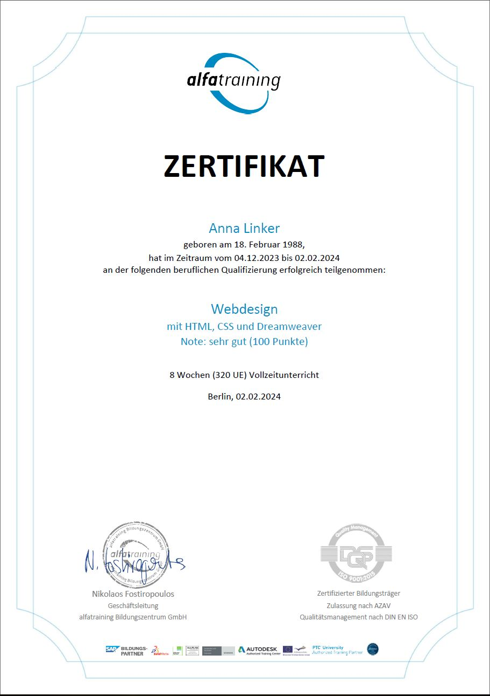

Hi, my name is
Anna Linker
I'm an aspiring web designer
based in Berlin
Looking forward to bring my expertise and determination to a dynamic team.
Passionate about crafting clean, user-friendly websites that bring ideas to life. Let’s build something
great together!
My story
Ever since I can remember, I’ve always had a passion for design. Whether it was sketching ideas or imagining how to transform spaces, creativity has always been my happy place. Over the years, I’ve had the chance to explore different career paths—HR administration, customer service, social media marketing—but something always pulled me back to design and technology.
Finally, I’ve taken the leap into the exciting world of IT, and I’m thrilled to be learning the foundations of web design. This course has opened my eyes to the endless possibilities of combining creativity with technology, and I couldn’t be more inspired!
With a background in digital marketing and a love for all things creative, I’m ready to start my journey as a web designer. I can’t wait to apply my skills, bring ideas to life online, and continue growing in this ever-evolving field. Let’s create something amazing!
html
css
figma
SEO
UX/UI
js
PROFESSIONAL BACKGROUND
Apr, 2021 - Nov, 2023
Social media marketing specialist at Concentrix
Major markets I worked with:
DACH, Nordic, Central Europe, Eastern Europe.
Business Verticals:
Retail, e-commerce, online courses, SAAS, healthcare,
real estate, automotive, finance.
Responsibilities:
- Providing strategic personalized counselling to the SMBs and agencies with budgets up to 1M/quarter.
- Guiding the clients step by step in setting up advertising campaigns.
- Domestic and cross-border scaling with the focus on ROAS maintenance.
- Preventing signal loss by providing guidance on Pixel optimization, Conversion API and Aggregated Events Measurement.
- Setting up tailored marketing funnels with an eye to the ad account eco-system based on each client's individual business needs.
Nov, 2019 - Mar, 2021
Administrator in the HR department at SchizMetallbau GmbH
Personnel Administration and Management:
- Creating personnel files and continuous maintenance of employee master data.
- Preparing employment contracts, amendment agreements, warnings, and terminations in compliance with current labor law.
Personnel/Workforce planning:
- Recording employee working hours, absences, and sick days.
- Processing leave applications and verifying leave entitlements.
- Issuing certificates and preparing references.
- Creating and updating job advertisements and managing applicants.
- Handling general correspondence (personnel and authorities).
Administrative and Commercial Activities:
- Employee/Customer support.
- Appointment coordination and monitoring.
- Business correspondence and mail processing.
- Data management/maintenance.
- Procurement management.
- Preliminary bookkeeping.
Oct, 2018-Oct, 2019
Warranty Specialist at Autodoc GmbH
Warranty Claims Management:
- Processing Warranty Claims: Reviewing, validating, and processing warranty claims from customers.
- Claim Documentation: Collecting and maintaining all necessary documentation related to warranty claims.
- Warranty Approvals and Denials: Making decisions on the approval or denial of warranty claims based on company policies and guidelines.
- Monitoring Claim Status: Tracking the status of claims and ensuring timely resolution.
- Claim Audits: Conducting audits of warranty claims to ensure accuracy and compliance with company standards.
Customer Support:
- Customer Communication: Handling customer inquiries related to warranty coverage, claim status, and procedures.
- Problem Resolution: Addressing and resolving customer complaints or disputes related to warranty claims.
May, 2018-Oct. 2018
Customer service at DEKRA Arbeit Group Germany
- Organizing and coordinating taxi services.
- Handling and supporting customer inquiries related to taxi services.
- Ensuring a smooth operation of taxi services through close collaboration with drivers and service providers.
- Managing bookings and scheduling appointments for customers.
Dec, 2023-Feb, 2024
Alfatraining, Berlin, Germany
Web Design Course
Sept, 2006-June, 2012
State University for Construction, Transportation, and Architecture, Bishkek, Kyrgyzstan
Bachelor in Architecture and Environmental Design
Web Development
I create responsive, modern websites that not only look great but also work smoothly. Let’s turn your ideas into a functional, online reality.
UX/UI
I design simple, intuitive experiences that make interacting with websites easy and enjoyable. It’s all about putting the user first and making things beautiful.
Digital Marketing
I help brands grow by crafting smart online strategies, from boosting visibility with SEO to connecting with people through social media. Let’s make your brand stand out.
My First Web Design Project
For my very first web design project, I wanted to dive into a topic I’m passionate about—gaming PCs. That’s how Cyber Forge Tech was born. It's a sleek, modern site that showcases custom-built gaming PCs for enthusiasts who want the best performance and cutting-edge tech.
Throughout the project, I focused on creating a user-friendly and visually appealing layout, with clear sections for product features, specs, and pricing. I wanted the design to reflect the high-tech and futuristic vibe of the gaming world while keeping the navigation simple and intuitive.
This project was a fantastic learning experience! From playing around with HTML/CSS and Bootstrap to figuring out responsive design, I was able to bring my vision to life. Check it out on GitHub
Cyber Forge Techand see how Cyber Forge Tech could be the go-to spot for gamers looking to build their dream rigs!
Landing page food delivery
For my second project, I whipped up a landing page for a fictional restaurant called Cheesy Burger Heaven, where burgers and cheese are always a match made in heaven! The site focuses on delivering a simple and satisfying experience, just like a perfectly melted slice of cheese on your favorite burger.
I kept the design clean and inviting, using bold colors and well-organized sections to showcase the menu, delivery options, and special deals. The goal was to make the site as easy to navigate as it is to enjoy a classic cheeseburger—no complicated ingredients, just a seamless experience from start to finish.
Cheesy Burger HeavenThis project gave me the chance to build on my web design skills, from creating responsive layouts to ensuring everything looks sharp (like cheddar) on any device. Check out Cheesy Burger Heaven and see how I combined design and functionality with a dash of cheesy charm!

A New Project Is On The Way!
Something exciting might appear here soon... or I might just be perfecting it for a little while longer. Good things take time, right? In any case, check back soon! Who knows—this might just be the spot where my next great project lands.